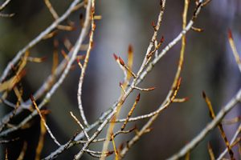
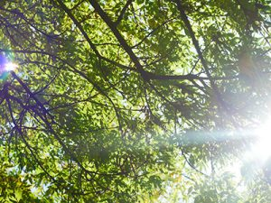

For deciduous trees, spring is a time of awakening. In fall, these types of trees lose all their leaves and suspend their growth. In order to begin growing again during the warmer months, trees need their leaves back. Last month we figured out trees know it’s spring. This month, we’re going over exactly what is happening to trees when they awaken from their “hibernation”. Spring is an important time of year for Ocean County tree companies. It is a perfect time of year to prune overgrown trees and remove dead ones from the yard. This year, we’re proud to announce that we are also offering spring garden clean-ups, hardscaping work, landscaping assistance, and more!
Ocean County Tree Companies Say Buds Come First

In April’s blog, we went over how trees know it’s spring and found out that it isn’t dependent on the warmth, but the cold. For us, it’s much easier to know when it’s spring. Spring is the season that everything in your yard and garden that took a break over winter comes back to life. For trees, this means buds. The arrival of buds on trees is one of the first indicator that spring is here and summer is on the way. What exactly are buds and why are they so important for trees?Buds can develop into leaves, flowers, or even shoots. Buds begin to emerge in our area after all the snow melts. The melting snow provides awakening trees with much needed water. As more snow melts, the base of the tree trunk is exposed and roots are able to suck up more and more water with spring rains. This water begins travelling up the trunk, mixing with the sugars and starches stored in the tree during winter, pushing sap through the tree while delivering nutrients to all parts of the tree. This is why maple trees are tapped in the spring to gather the sap to make maple syrup. This movement and transfer of nutrients is what allows buds to form.
Buds are important to trees because they are how trees grow. They are important to Ocean County tree companies like us because they dictate where we perform pruning and trimming. If cut in the wrong area, an entire branch can die. After the buds are formed, they break open forming flowers and leaves.
Leaves Come Next

Anyone who has ever sat in a grade school science classroom has heard about Photosynthesis. This function can only happen when a tree is covered in healthy, open, green leaves. This is also why deciduous trees lose their leaves in the winter. If they didn’t, it would be impossible for trees to suspend their growth and there is not enough resources to sustain growth so a tree would die. The longer days of spring and summer allow leaves to soak up the sunlight and convert it into energy for growth.
There is Activity Underground Too
Even though we see everything that is happening above ground, tree roots are very active in spring also. Even though roots can grow whenever the ground is not frozen, they grow the most during late spring. Roots are critical to the health of a tree as they serve multiple functions. During winter, they are able to store starches and sugars to be used in spring. Without roots, there would be no way for a tree to absorb nutrients. So, not only do they take-in resources, they store them as well. In addition to that, they act as an anchor for a tree. If roots stay too wet, they can die off. Just as with leaves, this is why it is important for deciduous trees to limit their root growth until spring when sunlight is aplenty.
Spring is an Active Time for Trees and Ocean County Tree Companies
Spring is one of our busiest times of year. This explains why. In addition to it being a great time of year for tree care, it’s the ideal time for all yard work. If you’re behind on your spring garden clean-up or need some mulch, give us a call! We’re available to help you in your yard in more ways than you might think – Contact us today for a free estimate!